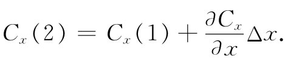

现在考虑一个小立方体 [1] 的特殊情况，并求出其通量的一个令人感兴趣的公式。设想各边与坐标轴平行而构成的一个立方体，如图3-5所示。假设最接近于原点的那个角点的坐标为x，y，z。令Δx为该立方体在x方向上的长度，Δy为y方向的长度，而Δz为在z方向的长度。希望求出矢量场C通过该立方体表面的通量，这将由算出通过小立方体每个面的通量之和而获得。首先，考虑图中标明为1的面。在这个面上，向外 的通量等于C的x分量的负值对该面面积的积分。这个通量为
-∫Cx dydz.
图3-5 来自一小立方体的通量的计算
由于我们考虑的是一个小 立方体，所以可用该面中心——我们称之为点（1）——的Cx 值乘以该面面积ΔyΔz作为这一积分的近似：
出自面1的通量=-Cx （1）ΔyΔz.
同理，出自面2的通量，也可以表达为：
出自面2的通量=Cx （2）ΔyΔz.
以上两式中的Cx （1）和Cx （2），一般说来，是有点差别的。如果Δx足够小，则可以写成：

当然，还有更多的项，不过它们将包含（Δx）2 和更高幂次的项，因而如果只考虑小量Δx的极限情况，则它们都可以被忽略。所以，通过面2的通量就是：
把通过面1和面2的通量相加，得：
上式中的微商，实在应在面1的中心处、即在点［x，y+（Δy/2），z+（Δz/2）］处计算。但在一个无限小立方体的极限情况下，即使在角点（x，y，z）处计算，所造成的误差也是可以忽略的。
依此类推，对其他每一对面，我们也会得到：
通过所有面的总通量是这些项之和。我们得出：
而式中微商之和恰好就是▽·C。并且，ΔxΔyΔz=ΔV，即该立方体的体积。所以对于一个无限小立方体 ，可以讲
∫表面 C·nda=（▽·C）ΔV. （3.17）
这就证明，一无限小立方体表面向外的通量等于该矢量的散度乘以该立方体的体积。现在我们看到了一个矢量的散度的“意义”。一个矢量在P点的散度就是P点附近单位体积 的通量——C的向外“流量”。
我们已把C的散度与每个无限小体积向外的C通量联系起来了。对于任何有限体积来说，我们可用上面证明过的事实——来自一体积的总通量等于从其中每一部分出来的通量之和。这就是说，我们可遍及整个体积对散度进行积分。它向我们提供了这样一个定理：任何矢量的法向分量对任何闭合曲面的积分，也可以写成该矢量的散度对该曲面所包围的体积的积分。这个定理以高斯命名。
高斯定理 ：
∫S C·nda=∫V ▽·CdV， （3.18）
式中S是任一闭合曲面，而V是这个曲面内的体积。